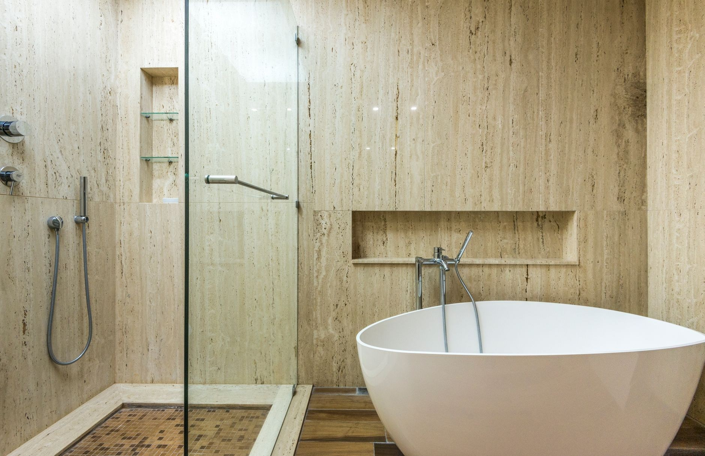

Glazurnictwo i wykończenia wnętrz w Kątach Wrocławskich i pod Wrocławiem.

Glazurnictwem zajmuję się od 2010 roku, firma INPRO ma siedzibę w Kątach Wrocławskich. Pracuję w domach i mieszkaniach pod Wrocławiem: łazienki, kuchnie, wykończenia wnętrz. Należę do Stowarzyszenia Branży Wykończeniowej.
Zaczynam od oględzin i pomiarów na miejscu, potem mówię wprost, ile to zajmie i ile kosztuje. Klienci w opiniach Google piszą przede wszystkim o dokładności, porządku na budowie i o tym, że doradzam przy doborze materiałów, zanim je kupią. Ocena 5,0 z 9 opinii.
Bez zobowiązań - opowiedz, co trzeba zrobić, a my podpowiemy jak i wycenimy.